Notebooks y PCs
Reparación, cambio de pantalla, teclado, batería y disco. Armado de PCs y asesoramiento de compra.

WhatsAppServicio técnico en Guaymallén, desde 2008
Somos amantes de la tecnología y la innovación, disfrutamos nuestro trabajo y estamos presentes en cada nuevo desafío.
Casi siempre es alguna de estas piezas. Mirá adentro.
Diagnóstico sin vueltas, presupuesto antes de arreglar.
Reparación, cambio de pantalla, teclado, batería y disco. Armado de PCs y asesoramiento de compra.
Reparación multimarca. Limpieza de cabezales, reset de almohadillas, sistemas continuos. Repuestos e insumos en stock.
Limpieza de virus, instalación y optimización de Windows y programas. Mantenimiento preventivo para empresas.
Impresoras
Epson, HP, Brother, Canon. De tinta, de tanque y láser.
Si parpadean las luces, no la tires: casi siempre es un reset.
Somos un taller chico que disfruta lo que hace. Te explicamos el problema en criollo y te damos el presupuesto antes de arreglar.
Soporte multimarca especializado
Calificación en Google
“Llevé una PC nueva para instalación de componentes y sistema operativo. Fueron súper rápidos y con una atención excelente. Sin duda voy a volver. ¡Gracias!”
“Excelente servicio. Llevé mi notebook y como el fallo era algo fácil no me cobraron nada. Esto no se ve en muchos lugares, muy satisfecho.”
“Excelente atención. Me solucionaron el problema de mi impresora en tiempo récord. Súper recomendable.”
“Excelente atención, te explican bien todo lo que quieras saber. Llevé una PC y la dejaron mejor que nueva. ¡Muy buenos precios!”
“Excelente atención de todo el personal, trabajos garantidos y precios inmejorables.”
Escribinos por WhatsApp o pasá por el taller en Guaymallén.
| Lunes | 09:00 – 19:00 |
|---|---|
| Martes | 09:00 – 19:00 |
| Miércoles | 09:00 – 19:00 |
| Jueves | 09:00 – 19:00 |
| Viernes | 09:00 – 19:00 |
| Sábado | 10:00 – 13:00 |
| Domingo | Cerrado |